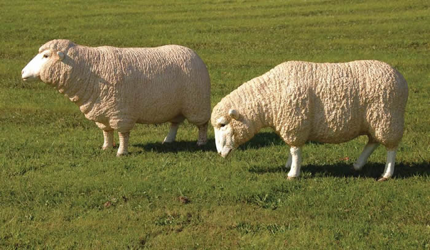
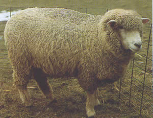

|
Sheep
|
|
Sheep breeds are classified as:- 1. Exotic wool sheep 2. Fine wool e.g. Merino Medium wool breeds e.g. Corriedale, Hampshire, Suffolk, Dorset Horn Improved hair sheep 3. Indigenous hair sheep
Merino  Merino originated from Africa but was developed in Spain then spread to other parts of the world. Merino is important for fine wool production in range areas because of their hardiness, excellent flocking instinct and efficiency in utilization of low quality forage. Although pure breeding is still done, cross breeds with dorpers and hampshires has offsprings with fast growth rates and quality mutton. The offsprings are ready for the market in 5 – 6 months. Corriedale  This was developed from Lincoln and Merino in Australia and is known for long wool and Merino fine wool. It is a dual sheep important for both mutton and wool capable of competitively producing both at a ratio of 50:50. They are hardy and can survive in semi arid areas. The dam breed is very fertile producing enough milk for the young ones and has good temperament. However breeding should be guarded against kempy fibre on the head and shoulders. Southdown
They are the smallest and oldest of the medium breeds. They give quality wool and provide fat lamb. They have a fast growth rate and can afford to lamb at weaning. Southdown sheepThey are also highly prolific with about 125 – 150% lambing rate. But the very small body size limits the final weight of fat lambs and the fleece produced is light. Because of their size cross breeding is not encouraged and the breed is dying in Kenya. Hampshire Down
This is the largest of the medium sized breeds after Suffolk. It has high growth rate with an average size of 80Kg. they are also quite prolific at 125 – 150% lambing rates. The breed is good for cross breeding for upgrading purposes. The sire is very fertile, aggressive and big in size making them the most important sire breeds. But conformation is limiting by the heavy shoulders at the front quarters tapering towards the rear quarters. Wool quality is low with dark and black fibres in the face and neck. Romney marsh
The breed was developed for wool and mutton. The wool produced is long and coarse therefore of low quality and the mutton and fat lambs are also of poor quality. Romney marsh can survive in marshy and wet areas because of their resistance to foot rot. The hooves are black and very hard making it difficult for pathogens to enter. They are efficient utilizers of pastures but the meat is delicate as it tends to retain tainting from pastures. Their cool temperament makes them easy to handle. Dorper
The breed was developed from a cross between black head Persian and Dorset Horn. By 1950 the first consignment of Dorper had arrived in Katumani Research Station. Rams were sold to Eastern Province. This is an improved hair sheep and it is important for mutton in marginal areas. They are hardy and produce quality meat. They have a faster growth rate and fertility compared to the indigenous. One limitations of the breed is the deposition of too much subcutaneous fat. The Red Masai is also an improved hair sheep used to cross breed with the Dorper. Red Masai
The breed is popular in south west Kenya and north Tanzania. They are important for mutton in marginal areas because they are hardy. The coat color is distinguished. They are good milkers and have high fertility. The size has large variations. Areas that need improvements in crossbreeding are size, fertility, fat distribution from the tail and behind the neck and growth rate. Somali Sheep
They are fat ramped mainly found in Somali, North Eastern Province of Kenya and Sudan. They are hardy; the skin quality is higher than other indigenous hair sheep and is important for mutton production. |